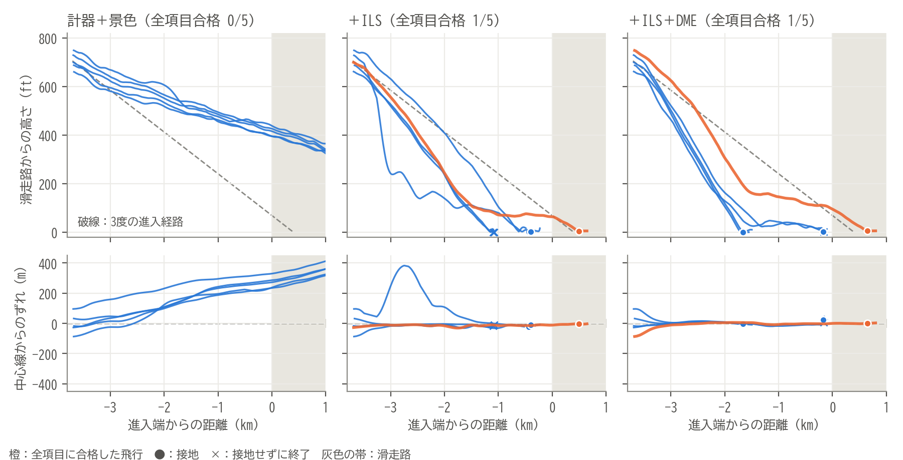

Physical AI 応用編1 ｜ 最終課題
パイロットと同じ情報で着陸できるか：
SmolVLAによる小型機の着陸と、
AIに足りなかった距離感
Morita_Junichiro
GitHub：github.com/Jun-Morita/physical-ai-applied1-2026 ｜ 動画：提出時に記載
タスクC172Pで羽田34Rに着陸
AIが使う情報計器と窓の外の景色
全11項目に合格（評価5回）学習前 0 → 最終 1
フライトシミュレーターFlightGearで、セスナ172Pを羽田空港の滑走路34Rに着陸させるタスクを、ロボット向けに公開されている視覚・言語・行動モデル（VLA）のSmolVLAに学ばせました。AIに与える情報は、パイロットが操縦席で使えるもの（計器と窓の外の景色）だけに限りました。景色だけでは、AIは自分の位置と距離を読み取れず、データを増やしても、AIが陥った状態からお手本を集め直しても（DAgger）、ずれを戻せませんでした。ILSの針を加えると横のずれを、さらにDME（距離計）を加えると高さのずれも戻し始め、中心線から0.2 mの位置に接地して全項目に合格しました。筆者らが2002年の研究でパイロットの操縦分析に用いた感度解析も当てはめ、AIが景色から距離感を得られていないことを確かめました。
1. 目的
ロボット以外の「身体」へ
画像と言語から行動を出すVLAが、航空機という異なる身体の、連続的で失敗の許されない制御に通用するかを確かめる。
人間と同じ条件で
滑走路までの正確な距離のような、パイロットが知り得ない値は使わない。人間と同じ情報で、何ができて何が足りないかを調べる。
実用への接点
着陸は飛行で最も事故の多い段階。景色から状況を判断する操縦支援や、訓練の評価の自動化につながる題材。
 学習前：開始7秒、左に64°傾いて海へ
学習前：開始7秒、左に64°傾いて海へ
 最終モデル：進入中（進入端の1.5 km手前）
最終モデル：進入中（進入端の1.5 km手前）
 最終モデル：接地直前（高さ約8 ft）
最終モデル：接地直前（高さ約8 ft）
図1 操縦席からの画像（左は評価用の番号1000、中央と右は1001）。AIにはこの窓の部分を切り出して入力する
Physical AI 応用編1 ｜ 最終課題
パイロットと同じ情報で着陸できるか：SmolVLAによる小型機の着陸と、AIに足りなかった距離感
2. タスクと評価
動画を1〜3分にまとめられるよう、タスクを「最終進入から接地まで」に絞りました。成功の条件は、実装を始める前に数値で決めました。
| 項目 | 内容 |
|---|
| 環境 | FlightGear 2024.1.4（Windows）、羽田空港RJTT、滑走路34R、昼・無風 |
| 機体 | セスナ172P（単発のプロペラ機） |
| 開始 | 滑走路の2 NM（約3.7 km）手前、3度の進入経路上、約70 kt。乱数で横±100 m・高さ±60 ft・方位±5度・速度±5 ktずらす |
| 操作 | エルロン・エレベーター・ラダー・スロットルの4つ。フラップ・トリム・ブレーキは固定 |
| 終了 | 接地の5秒後。墜落・着水、または接地しないまま300秒（シミュレーション時間）で終了 |
| 評価 | 墜落なし、接地位置（進入端から0〜900 m）、中心線（15 m以内）、接地直前の降下率、バンク角、主脚からの接地、機首方位（5度以内）、バウンドなし（2 ft以内）、滑走路内の滑走、規定時間の滑走、脚の損傷なしの11項目。すべて合格で成功 |
- 開始位置の乱数の番号は、学習用（1〜999）と評価用（1000以上）を分け、評価は学習に使っていない5つの開始位置（1000〜1004）で行いました。
- 接地の目標は、ICAOが定めるエイミングポイント（進入端から400 m）としました。
3. システム構成
図2 システム構成。画像の取得と推論の間はシミュレーションを一時停止する
- FlightGear：機体の状態を毎秒20回UDPで送り、操作をUDPで受け取ります。設定の読み書きや一時停止はHTTPで行います。連続して流れる状態と、必要なときだけ行う要求とを分けたのは、ROS 2のトピックとサービスの役割分担にならったものです。
- 収録・操縦プログラム：状態・画像・操作を記録し、着陸を11項目で自動評価します。開始位置の確認、機体側スクリプトによる操作の上書きの検知と復元、墜落時の自動終了も行います。
- SmolVLA推論ワーカー：画像・指示文・計器の値を受け取り、4つの操作を返します。推論の間はシミュレーションを止め、0.2秒（シミュレーション時間）ごとに操作を更新します。そのため今回の飛行はリアルタイムではありません（9章）。
Physical AI 応用編1 ｜ 最終課題
パイロットと同じ情報で着陸できるか：SmolVLAによる小型機の着陸と、AIに足りなかった距離感
4. お手本とモデル
お手本：自作の自動着陸
ゲームパッドでの手動着陸は17回中2回しか全項目に合格せず、学習には足りませんでした。そこで、機体の状態を読んで4つの操作を出すPID制御の自動着陸を作り、お手本にしました。速度をスロットルで、進入経路をピッチ（エレベーター）で保ち、高さ20 ftから機首を上げて降下を弱めます。お手本の飛行は、全11項目に合格したものだけを学習に使いました。
1
通常の開始2 NM手前から。乱数でずらした48回（ずれを広げた条件を含む）2
近くから開始滑走路の0.6〜2.5 km手前、大きくずれた状態から67回3
DAggerAIが実際に陥った状態から、お手本が立て直した109回4
審査して採用全項目に合格した計224回（画像約4.5万枚）
モデル：SmolVLAの追加学習
| 項目 | 内容 |
|---|
| モデル | SmolVLA（LeRobot 0.4.3、lerobot/smolvla_base）。視覚・言語モデルSmolVLM2をもとに、ロボットの操作を出すよう学習済み。重み・学習コード・データまで公開され、追加学習と再現がしやすい |
| 画像 | 操縦席の画像（1280×720）から窓の部分を正方形に切り出し、512×512で入力 |
| 出力 | 4つの操作（−1〜1に正規化）。画像1枚ごとに、その瞬間の計器の値とお手本の操作を1組にして学習。バッチ8、15000ステップ、RTX 3060で約3時間。画像を読み取る部分は固定 |
入力の段階：パイロットが読める情報に限る
| 入力 | 内容 |
|---|
| 位置の数値（比較用） | 滑走路からの距離・横ずれ・対地高度・対地速度など17個。パイロットは知り得ない |
| 計器（9個） | 高度計、速度計、昇降計、姿勢指示器（バンク・ピッチ）、方位、旋回計、接地。位置は景色から読ませる |
| ＋ILS（2個） | 進入コースからの左右のずれ（±2.5°で振り切れ）と、進入角からの上下のずれ（±0.7°）。NAV指示器の針 |
| ＋DME（1個） | ILSと一緒に置かれた距離計までの斜め距離（0.1 NM刻み） |
FlightGearの航法データでは、RJTT 34RにILSとDMEが設置されています。ILSの針とDMEの値は、記録した位置から計器と同じ定義で計算して入力しました。
画像・計器・操作の時刻をそろえる
画像の取得に0.3〜0.9秒かかり、20 Hzの制御に間に合いませんでした。そこで取得中はシミュレーションを止め、止めた瞬間の画像・計器の値と、その状態に対するお手本の操作を1組にしました。
Physical AI 応用編1 ｜ 最終課題
パイロットと同じ情報で着陸できるか：SmolVLAによる小型機の着陸と、AIに足りなかった距離感
5. 結果
評価は5回とも同じ開始位置（番号1000〜1004）で行いました。
| モデル | 入力 | お手本 | 合格 | 飛び方 |
|---|
| 学習前 | 位置の数値 | — | 0/5 | 開始15〜19秒で裏返って海へ |
| ① | 位置の数値 | 48 | 1/5 | 5回とも接地帯に接地（比較用。パイロットは知り得ない値を使う） |
| ② | 計器＋景色（全体） | 48 | 0/5 | 経路の上下にばらつく |
| ③ | 計器＋窓の切り出し | 48 | 0/5 | 低すぎ、横に最大134 mずれる |
| ④ | 計器＋窓の切り出し | 78 | 1/5 | 近くからのお手本で横ずれが減る。高さは低め |
| ⑤ | ④＋画像部分も学習 | 78 | 0/5 | 高さは直ったが、5回とも右へ流れる |
| ⑥ | 計器＋窓の切り出し | 115 | 0/5 | お手本を増やしても低すぎる |
| DAgger 1 | 計器＋窓の切り出し | 160 | 0/5 | 右へ300〜600 m流れ、高すぎる |
| DAgger 2 | 計器＋窓の切り出し | 203 | 0/1 | 機首を上げて上昇し続ける（1回で中止） |
| DAgger 3 | 計器＋窓の切り出し | 224 | 0/5 | 上昇は止まったが、降下が浅く右へ流れる |
| ＋ILS | 計器＋ILS＋窓 | 224 | 1/5 | 横は5回とも±20 m以内。降下が深すぎる |
| ＋ILS＋DME | 計器＋ILS＋DME＋窓 | 224 | 1/5 | 横は安定。低くなっても経路に戻し始める（3回） |

図3 計器を加えるごとの飛行経路（評価5回）。上は横から、下は上から見た経路。左はDAgger 3回目
- 景色だけでは、ずれを戻せない。②〜DAgger 3回目は、ずれの向きは変わっても、ずれに気づいて戻す動作がありませんでした。
- ILSで横、DMEで縦。ILSを加えると、3 km手前で右に250 mずれた機体が中心線に戻りました。DMEを加えると、経路より低くなったあとに戻す動作が出て、1001は進入端から646 m、中心線から0.2 m、降下率2.8 ft/sで接地しました。
- ただし、開始直後に深く降りすぎる癖は残り、残る4回は滑走路の手前に降りました（7章）。
Physical AI 応用編1 ｜ 最終課題
パイロットと同じ情報で着陸できるか：SmolVLAによる小型機の着陸と、AIに足りなかった距離感
6. 試行錯誤：原因を一つずつ絞る
入力を計器に限ってから、原因の仮説を立てては試しました。うまくいかなかった試みも、原因を絞り込む手がかりになりました。
| 仮説 | 試したこと | 結果と分かったこと |
|---|
| 画像の中の滑走路が小さい | 窓の部分だけを切り出し、512 pxで入力（③） | 高さが低すぎ、横のずれも残る |
| 滑走路の直前で修正する手本がない | 0.6〜2.5 km手前の大きくずれた状態からのお手本を追加（④） | 計器と景色だけで初めて合格（1/5） |
| 画像の読み取りが弱い | 画像を読む部分の最後の4層も学習（⑤） | 高さは直ったが右へ流れる。お手本78回では足りない |
| データが足りない | お手本を115回に増やす（⑥） | かえって悪化（0/5）。量では解決しない |
| AIが陥る状態の手本がない | DAggerを3回 | AIの癖を消すことはできたが、ずれを戻す動作は身につかない（下記） |
| 自分の位置が分からない | ILSの針を加える | 横のずれを戻せるようになる |
| 距離が分からない | DMEを加える | 高さのずれも戻し始め、合格（1/5） |
DAgger：AIが実際に陥った状態から、お手本に立て直させる
模倣学習のAIは、お手本が通らない状態に入ると崩れます。そこで、AIを学習用の番号で飛ばし（評価用の番号は使わない）、経路から外れた瞬間の位置・高度・速度・姿勢を記録して、その状態からお手本の自動着陸を飛ばしました。
1
偏った癖から集めたデータは、新しい癖になる
1回目の開始状態45個は、⑥の癖を写して「右寄り・低すぎ」に偏っていました（右に20 m超が865枚、左は37枚）。お手本の立て直しはエルロンを右へ戻す時間が長く、AIはその偏りを覚えて右へ流れ、高すぎるようになりました。
2
左右・上下を対称にすると、別の弱点が表れた
2回目は開始状態を中心線と進入経路に対して反転させ、左右・上下をそろえました。ところがAIは機首を上げたまま上昇し続けました。ピッチが+3°を超えると、窓の切り出しには空しか写りません。お手本は滑走路を見失うほど機首を上げないため、「見えないときは機首を下げて探す」場面がありませんでした。
3
狙った癖は消せた。それでも、ずれは戻せない
3回目は、機首上げで空しか見えない状態から機首を下げて滑走路を探すお手本を、学習で10倍多く使いました。上昇の癖は消えましたが、高さと横のずれを戻す動作は、3回のどれにも見られませんでした。DAggerが効くのは、AIが状態を正しく読めるときです。
Physical AI 応用編1 ｜ 最終課題
パイロットと同じ情報で着陸できるか：SmolVLAによる小型機の着陸と、AIに足りなかった距離感
7. AIは何を見て操縦しているか
筆者らは2002年の研究[1]で、B767のシミュレーターで現役パイロット4人の着陸操作を記録してニューラルネットワークでモデル化し、どの視覚情報が操縦に効いているかを解析しました。今回のSmolVLAにも同じ考え方を当てはめ、入力を少しずつ変えたときに操作がどう変わるかを調べました。
| 2002年のパイロットモデル | 今回のSmolVLA |
|---|
| 入力 | 人が設計した視覚の手がかり4つ（地平線の位置・滑走路の傾きなど）と操縦の履歴 | 窓の画像・指示文・計器の値（履歴なし） |
| モデル・お手本 | ニューロン4個 ／ 現役パイロット（B767） | 約4.5億パラメータ ／ 自作の自動着陸（C172P） |
景色から距離を読めているか（画像の差し替え）
評価飛行の各コマで、画像だけを進入の反対側の場面（開始直後と接地直前）のものに差し替え、操作の変化を、計器の値だけを差し替えたときと比べました。推論のノイズは各コマで共通にしました。
| 画像の差し替えの効き（計器の差し替えに対する比、中央値） | エルロン | エレベーター | ラダー | スロットル |
|---|
| ①位置の数値 | 0.03 | 0.02 | 0.09 | 0.02 |
| ④計器＋窓 | 0.27 | 0.14 | 0.30 | 0.07 |
| ＋ILS＋DME | 0.17 | 0.15 | 0.18 | 0.09 |
- 位置の数値があると、AIは景色を見ない。①では画像を差し替えても操作がほぼ変わりませんでした。
- 計器だけにすると、景色を使い始めるが、粗い。④では横の操作で画像が計器の約3割まで効くようになりましたが、縦の操作はまだほとんど計器で決めていました。遠い・近いは大まかに見分けても、経路より何十 ft高いか低いかを読み分けるほどではありません。
- 針で位置が分かると、AIは針を頼りにする。最終モデルでエルロンが最も強く反応するのは機首方位とコースの針、エレベーターでは機首方位・速度に次いでDMEの距離でした（±0.1標準偏差ずらしたときの中心差分、論文の式(4)と同じ）。
ILSの針への反応と、設計の落とし穴
機体を30 m上下させた状態で調べると、最初のILSモデルは、経路より低いほどスロットルを絞っていました。原因は針の作り方でした。お手本は接地直前の引き起こしで必ず進入角の線より下を通るため、そこで針は「下に振り切れ」、スロットルはアイドルです。お手本115回では、そうした画像（1537枚）が本当に経路より低い場面（369枚）を大きく上回っていました。パイロットが決心高度より下では針に従わないのと同じく、100 ft未満では針を0としました。DMEを加えたモデルでは、低いと機首を上げる正しい向きの反応がエレベーターに出るようになりましたが、スロットルの逆向きの反応は残りました。
ベテランのパイロットとの違い
最終モデルのエレベーターは機首方位・速度・DME・降下率にほぼ同じくらい反応し、計器どうしは組み合わせて使えています。一方、①は位置の数値があると景色を見なくなり、最終モデルも針が入ると横の操作での景色の効きが0.27から0.17に下がりました。景色を計器で確かめるのではなく、分かりやすい手がかりに乗り換えています。ベテランのパイロットは計器と窓の外を見比べ、高度の変化率やピッチ[1]など時間の流れの中の手がかりをまとめて判断します。静止画1枚で操作の履歴も持たない今回のAIは、まだその段階にありません。
Physical AI 応用編1 ｜ 最終課題
パイロットと同じ情報で着陸できるか：SmolVLAによる小型機の着陸と、AIに足りなかった距離感
8. 工夫した点
① パイロットと同じ情報に限った
滑走路までの正確な距離など、操縦席で読めない値は入力から外した。ILSとDMEも、羽田34Rに実在する航法装置の範囲で加えた。
② 評価を厳密にした
接地位置・中心線・降下率・バウンド・脚の損傷など11項目を自動で判定。全項目に合格したお手本だけを学習に使った。
③ 評価と学習を混ぜない
開始位置の番号を学習用と評価用に分けた。DAggerでも、AIを学習用の番号で飛ばして開始状態を集め、評価の場面を学習に入れなかった。
④ お手本を自作した
手動では成功が少なかったため自動着陸を作り、近くから大きくずれた状態や、AIが陥った状態からの立て直しも集めた。
⑤ 時刻をそろえた
画像の取得中はシミュレーションを止め、画像・計器・お手本の操作を同じ瞬間の1組にした。
⑥ 差し替えで原因を切り分けた
画像・計器・針を1つずつ差し替えて操作の変化を測り、「景色を見ていない」「針への反応が逆」などを数値で確かめた。
⑦ 損失ではなく飛行で判断した
検証の損失はどのモデルも0.006〜0.013で差がなく、⑥やDAggerの悪化を見抜けなかった。必ずシミュレーターで5回飛ばして比べた。
⑧ 再現性
環境をuvで固定し、開始条件・評価基準・モデルの由来（ハッシュ）・学習の設定を記録して、収録から評価までをコマンドで再現できる。
Physical AI 応用編1 ｜ 最終課題
パイロットと同じ情報で着陸できるか：SmolVLAによる小型機の着陸と、AIに足りなかった距離感
9. 考察と今後の課題
AIに足りなかったのは、操縦ではなく距離感
位置の数値を与えた①は5回とも接地帯に降りており、操縦そのものは学べていました。計器と景色だけにすると、AIは自分の位置と距離を景色から読めませんでした。人間は滑走路の見え方から自然に距離をつかみますが、今回のAIには次の制約がありました。
- 静止画1枚で判断している。近づくにつれて景色が広がる「動き」を使えない。
- 画像が粗くまとめられる。SmolVLAは512×512の画像を8×8＝64個のかたまりにして使う。1つが視野の約2°で、2 km手前で30 m低いときの見え方の違い（約0.9°）より大きい。
- 画像を読む部分は、一般の写真で学んだまま。距離や奥行きの訓練を受けていない。
ILSで位置が、DMEで距離が分かると、AIは横、次に縦のずれを戻し始めました。人間のパイロットも視界が悪いときはこれらの計器に頼ります。計器を一つ加えるたびにできることが増えたことは、足りなかったのが認識だったことを示しています。
今後の課題
- 景色から距離を読ませる：数枚の画像を続けて入力して動きを見せる、画像を読む部分を飛行の画像で学習させる（LoRAなど）。
- 縦の制御：お手本はピッチで経路を、スロットルで速度を保つ。経路のずれに応じたエレベーターの差は小さく、模倣の誤差に埋もれやすい。経路のずれから戻す場面を重く学習させる。
- リアルタイム処理：最終モデルの推論は約0.25秒で、ノイズ除去の反復を半分にすると約0.16秒になった。今はシミュレーションを止めて飛んでいる。
- 旅客機・戦闘機への展開：Boeing 747-400とF-14Bも導入済み。同じVLAが異なる「身体」にどこまで適応できるかを比べたい。
参考文献
[1] 鈴木ほか：ニューラルネットワークによる航空機パイロットの操縦分析，日本機械学会 第11回交通・物流部門大会講演論文集，pp.373–376，2002．doi:10.1299/jsmetld.2002.11.373